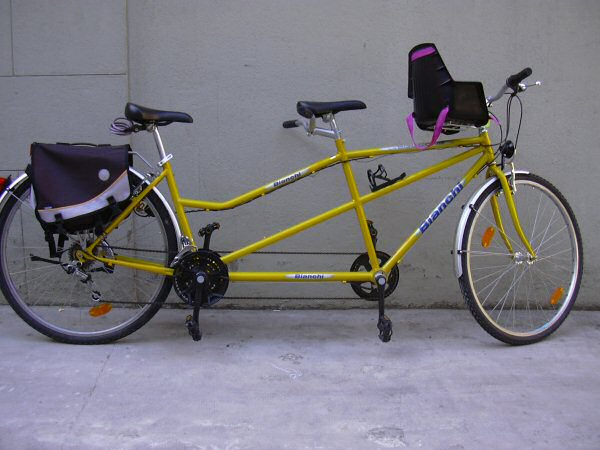

Definicja roweru
- Rower
- – jedno- lub wielośladowy pojazd drogowy napędzany siłą mięśni poruszających się nim osób za pomocą przekładni mechanicznej, wprawianej w ruch (najczęściej) nogami. Pierwotnie nosił nazwę welocyped oraz bicykl i podobnie nazywany jest w większości nowożytnych języków europejskich. Obecna polska nazwa pochodzi od brytyjskiej firmy Rover, która dawniej produkowała rowery.
Typowy współczesny rower klasyczny jest jednośladem dwukołowym. Ramy roweru wykonuje się ze stali zwykłych lub stopowych, stopów aluminium lub kompozytów. Układ jezdny roweru to koła (zwykle) szprychowe i ogumienie pneumatyczne. Napęd jest przekazywany przez układ napędowy roweru, którym przeważnie jest przekładnia łańcuchowa i system zmiany przełożeń (przerzutka zewnętrzna, przerzucającą łańcuch na koła łańcuchowe o różnych ilościach zębów lub wewnętrzna, znajdującą się w piaście). Bywają również modele z napędem przekazywanym wałkiem Cardana. Hamulce: mogą być nożne, działające przy kręceniu pedałami w tył (tzw. torpedo lub hamulce zintegrowane z przerzutką wewnętrzną). Najpopularniejsze są jednak działające na obręcz mechaniczne (cięgnowe) lub (rzadziej) hydrauliczne, hamulce ręczne (hamulce szczękowe, hamulce V-brake). Coraz popularniejsze w rowerach są hamulce tarczowe. Obecnie często (oprócz rowerów szosowych) stosuje się w rowerach amortyzację obu kół (przedniego, jak i tylnego).
Rodzaje rowerów
Rower miejski

Rower przeznaczony do jazdy w mieście. Tradycyjny rower miejski, tak zwany holender, zbudowany jest najczęściej na kołach 28-calowych (choć spotyka się również rowery z kołami 26- i 27-calowymi), posiada giętą, szeroką kierownicę, krótką ramę i szerokie siodełko umożliwiające jazdę w pozycji wyprostowanej. Posiada on też zwykle lampki zasilane z dynama, komplet błotników, osłonę na łańcuch, nóżkę, bagażnik tylny, czasem osłonę tylnego koła czy koszyk.
Rower górski (MTB)

Klasa rowerów, których przeznaczeniem jest jazda w terenie trudniejszym, niż pozwalają na to rowery szosowe czy trekingowe, np. górskie ścieżki, szlaki leśne, specjalne tory przeszkód. W porównaniu do rowerów szosowych oraz trekkingowych, rowery MTB są cięższe, ze względu na mającą gwarantować większą wytrzymałość konstrukcję. Rowery górskie, celem poprawy przyczepności i możliwości pokonania szybko i bezpiecznie wymagającego terenu (rock gardeny, rampy) w rowerach profesjonalnych oraz komfortu jazdy w rowerach amatorskich i turystycznych, bardzo często wyposaża się w różnego rodzaju amortyzatory, które również mają istotny wpływ na masę pojazdu. Amortyzatory instaluje się głównie w widelcu i ramie; amortyzowane sztyce siodełka i mostki nie są popularne w rowerach profesjonalnych, ale wciąż można je spotkać w rowerach turystycznych i starszych rowerach profesjonalnych. W ostatnich czasach coraz częściej używa się sztyc opuszczanych. Spotyka się je u zawodników wyścigów XC.
Tandem
Rower przeznaczony dla dwóch lub więcej osób, siedzących w układzie jedna za drugą. Typowy tandem ma, tak samo jak rower jednoosobowy, jedną ramę i dwa koła, za to każda z osób ma własne: kierownicę, siodełko i pedały. Zdarzają się jednak także tandemy przeznaczone dla większej liczby osób. Udział w napędzaniu roweru mają obie osoby, natomiast kieruje rowerem zazwyczaj osoba z przodu, aczkolwiek spotykane są rowery specjalistyczne, np. dla osoby dorosłej z dzieckiem, lub dla osoby niepełnosprawnej z opiekunem, gdzie można przełączać kierowanie rowerem, lub też tylko tylna osoba ma taką możliwość. W każdym z tych przypadków osoba niekierująca wykorzystuje wtedy swoją kierownicę tylko jako oparcie dla rąk. W podobny sposób mogą być również rozłączane lub przełączane układy napędu i hamowania. Spotykane są również tandemy, gdzie na tylnej osi są dwa koła, jednak nadal takie pojazdy nazywa się rowerami, a nie wózkami rowerowymi, z uwagi na wydłużony kształt całego pojazdu.